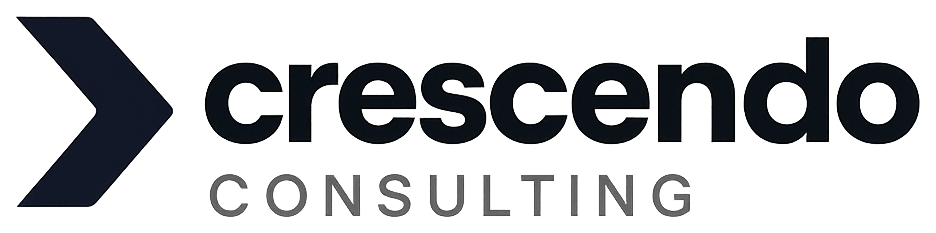

I've spent my career helping the world's biggest companies turn AI and data into measurable P&L outcomes. Crescendo brings that same playbook to your team — senior work, directly delivered, no agency overhead.
Career arc: high-stakes private equity (analytical discipline, decision-making instincts) → management consulting → senior role leading Data & AI strategy for enterprise clients across financial services, retail, hospitality, and entertainment. Through-line: learning how capital allocators, operators, and technologists actually think — and translating between them.
Trained in both business strategy and modern technical execution: Python, SQL, cloud platforms, agentic AI stack. I can present to the board in the morning and ship production code by that afternoon. That combination is rare, and it's why every engagement moves faster than a traditional consulting project.
Operational and data audit. Prioritized AI opportunities scored by ROI. Written scope of work for the top one or two opportunities. Honest "start here" recommendation — or "don't build this yet."
AI Intake & Voice Capture · Reputation & Review Intelligence · GEO & AI Search Optimization · Internal Knowledge & HR Assistants · Agentic Operational Workflows · Custom AI Tools.
Senior strategic technology guidance without a full-time CTO. Weekly check-in, architecture decisions, vendor evaluation, hiring & coaching, on-call access, quarterly roadmap review.